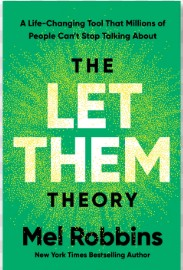
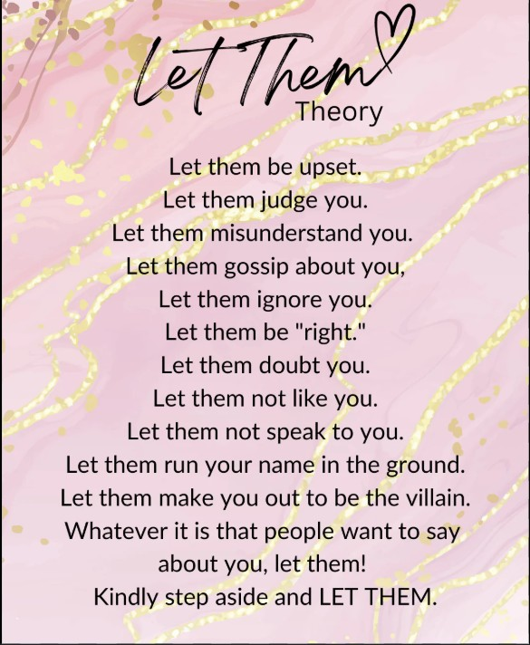
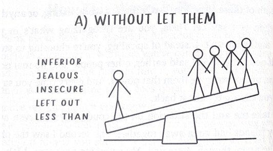
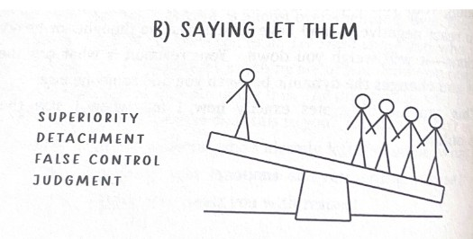
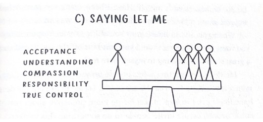
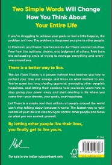

The Let Them Theory
" Design Your Life, Not Their Approval "

Inspired by Mel Robbins' latest motivational breakthrough,
“The
Let Them Theory” encourages you to stop
trying to control how others see or react to you. If people doubt your choices, misunderstand your journey,
or dislike your creative expression.
As a creator, writer, or professional, it is easy to feel overwhelmed by judgment or fear of disapproval.
But Mel is advice is simple and powerful: let them think what they want. You focus on your mission.
When working on projects, blogs, or personal goals, the pressure
to please everyone can lead to burnout or
inauthenticity. Instead, embrace your unique perspective. If someone does not like your style. If they doubt
your talent.

Trust yourself, keep creating boldly, and when the noise gets
loud, just smile… and let them. Because the people meant for you will never need convincing. And those who
do not get it? They were never your audience to begin with. Let them talk. Let them doubt. Let them scroll
past.



True confidence is quiet. It does not seek permission. So, the
next time fear creeps in, just remember the
phrase: “Let them.” And keep moving forward.
